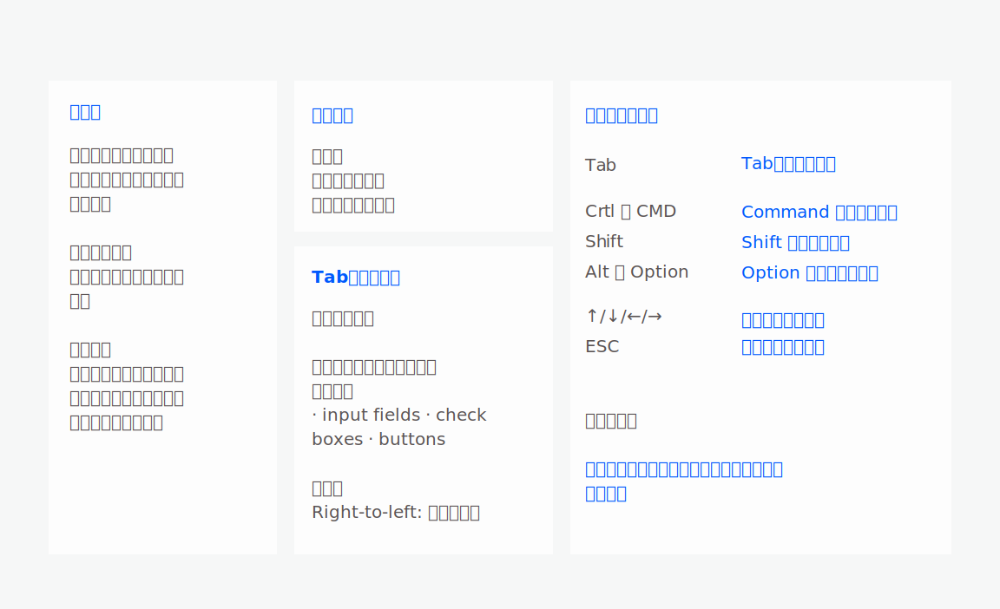

交互
用户研究
PC语音输入方案可用性测试及设计提升
2019年10月 - 2020年1月
交互设计师
本文阅读大约需要 8 mins

2019年10月 - 2020年1月
交互设计师
本文阅读大约需要 8 mins
总结了良好的快捷键体验如下表所示：

1）关闭主界面后，或最小化后。再次被激活，默认激活最后一次会话人。同时排除移动端的干扰。
2）界面区域模块、元素之间切换，按以上序号顺序切换用【Tab】逆序切换用【Shift+Tab】
a）有悬浮态的可用悬浮态，没有悬浮态的，需要用聚焦框
b）聚焦框可按Enter键选中进入相关功能
c）切换至【1.会话区域】，用↑↓箭头切换会话
3）有展开浮层、二级页面、弹窗等操作的对象，按【ESC】键退出
4）【Ctrl + ↑↓】快速定位上一个以及下一个未读会话，切换完会话，光标自动定位至输入框
5）发现用户连续按键【Tab】，可弹窗对用户进行引导

受众:不经常使用键盘且有独立办公室，具有语音输入的用户
目的:验证两种可行方案的可用性
样本选择:邀请不同使用习惯的用户，例如普通用户以及键盘使用用户。覆盖不同岗位的用户7位样本。
测试方法
用户可用性测试,使用ProtoPie制作可交互低保真测试材料.
设置5个主要任务顺序为:
a) 在面板上找出语音输入的入口
b) 开始 / 暂停 / 重启 / 发送流程
c) 自由切换仅语音/仅文字/语音加文字模式
d) 验证脱屏操作
e) 在脱屏操作后执行语音输入
测试时间: 2019.12.10～2019.12.15

方案 1 ： 暂停后可重启语音输入流程，减少选择而放大了快捷键的高效性。
优势: 较极客以及操作简单高效
劣势：学习成本较高

方案 2 ： 暂停之后可继续流程，也可重录，可精细化控制语音输入流程。
优势: 路径十分清晰，适合第一次使用的用户
劣势：步骤繁琐且对于可导致低效

测试结果说明，如下图所示

测试结果按照：行为 ｜ 有效– 混淆 –出错，认知｜ 直觉 – 习惯，进行归纳。为设计迭代提出迭代建议。